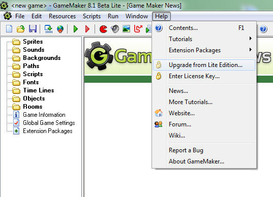

La Lite Edition è pensata per coloro che muovono i primi passi sul percorso dello sviluppo giochi. Può essee usata liberamente ma è limitata nelle funzionalità. Visualizza anche un logo popup quando si avviano i giochi e regolarmente ti rimanda all'aggiornamento del programma. Quando stai usando GameMaker regolarmente sei fortemente raccomandato ad aggiornare alla Lite Edition.
La Standard Edition contiene considerevolmente più funzionalità e non viene visualizzato alcun logo o messaggi di popup. Più precisamente, la Standard Edition ha le seguenti funzionalità aggiuntive:
Aggiornare dalla Lite Edition costa solo $39.99 (soggetto a cambiamenti) Questo è l'unica tassa che sarà valida per tutte le versioni 8.x di GameMaker.
Quando stai avviando la Lite Edition, puoi aggiornare a Standard
usando la schermata di benvenuto quando apri GameMaker.
Per aggiornare dalla schermata di benvenuto, clicca semplicemente il pulsante
Purchase Now!, poi procedi attraverso il processo di acquisto. Una volta
che hai completato l'acquisto, vedrai visualizzato la tua nuova licenza che potrai
copiare e incollare nella casella di testo nello Step 2, e cliccare il pulsante
Upgrade Now!. Game Maker aggiornerà poi alla completa Standard Edition.
Il file di licenza ti sarà anche inviato per email usando il tuo indirizzo email
inserito durante l'acquisto, e se hai effettuato l'accesso sullo store di YoYo Games,
sarà anche legato a questo account, consentendo di recuperarlo in ogni momento.
Se non effettui l'accesso, l'email conterrà anche i dettagli delle impostazioni del
nuovo account usando l'indirizzo email che hai fornito. Questo ti permette di nuovo
di recuperare il tuo codice di licenza di Game Maker.
Assicurati di salvare l'e-mail e il codice stesso, in quanto sarà necessario
ogni volta che si desidera reinstallare GameMaker.
Puoi visualizzare di nuovo questa finestra di dialogo selezionando dal menu l'elemento Purchase Upgrade from Lite Edition..., come visualizzato sotto

Dopo aver comprato GameMaker (e quindi, avere una chiave di licenza), puoi andare al menu Help, e scegliere Enter License Key. Una volta che hai inserito una valida, la tua copia di GameMaker verrà aggiornata. Devi essere connesso a internet per aggiornare.
Mentre GameMaker da solo non richiede una connessione a internet, richiederà occasionalmente accesso per mantenere la licensa. Se non puoi connettere il tuo computer a internet, puoi scaricare il file di controllo licenza dal sito web di YoYoGames, e puntare al sistema di auto aggiornamento. Se require occasional access to maintain the license. If you can not connect your computer to the internet, you can download the license check file from YoYo Games website, and point the auto update system to it. Se non si riesce a fornire un file valido, o la connessone internete quando richiesta, la tua copia di GameMaker verrà declassata a Lite fino al momento in cui si farà.